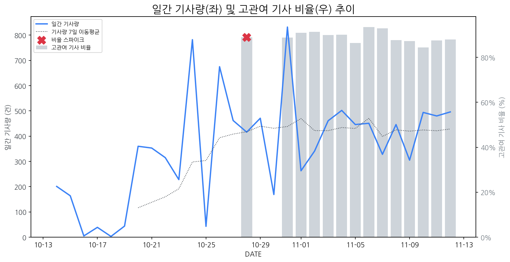

1
시장 활동 지표
기사량 추세 & 이상 징후 탐지
시장의 '전체 기사량'이 평소보다 비정상적으로 급증했는지(Spike)를 차트로 확인하고, LLM이 분석한 급등의 핵심 원인을 파악할 수 있음

고관여 기사란? 산업 연관 키워드로 수집된 기사들 중 디스플레이 키워드에 가중치를 반영하여 도출된 관련성 높은 기사
수집된 기사 수 (2025-11-12)
496
+11% WoW
기사량 변동 수준 (7일 이동평균 대비)
±6.7% 이하
2
오늘의 키워드
급격한 관심 ↑, 주목해야 할 키워드
1
벤츠
+4.8σ
LG그룹 수뇌부와 벤츠 회장의 연쇄 회동으로, 전장 사업 협력 기대감이 크게 상승한 것이 주요 원인.
Related Metrics
금일 언급량: 32, 전일 대비: +31
Interpretation
LG-벤츠, 전장 동맹 본격화
Next Step
'벤츠' 관련 상세 기사 및 경쟁사 반응 모니터링
2
디스플레이
+3.6σ
K-디스플레이 초격차 기술 확보 및 신시장 개척 노력과 정부 지원 사업 발표로 관심 급증.
Related Metrics
금일 언급량: 18, 전일 대비: +14
Interpretation
한국 디스플레이 재도약 시도
Next Step
'디스플레이' 관련 상세 기사 및 경쟁사 반응 모니터링
3
xr
+3.2σ
삼성 갤럭시 XR 출시 임박 및 올레도스 패널 탑재 소식에 XR 시장 경쟁 심화 기대감이 반영된 것으로 보임.
Related Metrics
금일 언급량: 15, 전일 대비: +10
Interpretation
XR 시장 경쟁 본격화
Next Step
'xr' 관련 상세 기사 및 경쟁사 반응 모니터링
4
갤럭시
+1.8σ
갤럭시 XR 출시 기대감과 폴더블폰 Z 트라이폴드 출시 임박 소식이 복합적으로 작용한 결과.
Related Metrics
금일 언급량: 11, 전일 대비: +2
Interpretation
삼성 디스플레이 신기술 주목
Next Step
'갤럭시' 관련 상세 기사 및 경쟁사 반응 모니터링
3
실시간 Risk 키워드
경계해야 할 시그널 탐지
특정 토픽의 부정 감성 점수가 급등할 때 이를 즉시 탐지하고, "근거 기사" 링크를 통해 리스크의 실체를 빠르게 파악할 수 있음
키워드 분석 결과, 오늘은 걱정할 만한 하락 신호가 없습니다. (부정 언급량 변화: +1.5σ 이내)
4
주요 이벤트 모니터링
실시간 산업 동향 파악을 위한 주요 활동
최근 발생한 주요 기업들의 신제품 출시, 투자 등 주요 이벤트를 제공하여 매일 경쟁사 동향을 확인할 수 있음
중국 업체가 270인치 마이크로 LED 디스플레이를 공개하며 대형 디스플레이 시장 경쟁에 뛰어들었다. 이는 삼성과 LG가 주도하던 마이크로 LED 시장에 새로운 도전자가 등장했음을 의미한다.
Impact
중국의 마이크로 LED 기술 발전은 시장 경쟁 심화와 더불어 관련 기술의 가격 하락 및 접근성 향상을 가져올 수 있다.
Next Step
중국 업체의 기술 수준 및 시장 전략을 면밀히 분석하고, 가격 경쟁력 확보 및 차별화된 기술 개발 전략을 수립해야 한다.
반도체 재료 및 부품 관련주들이 긍정적인 흐름을 보이고 있다. 미코, 에스에이엠티, 덕산하이메탈 등이 대표적인 수혜주로 언급되며 투자자들의 관심을 받고 있다.
Impact
반도체 시장 전반의 투자 심리 개선과 관련 기업들의 실적 개선 기대감을 높여 주가 상승을 견인할 수 있다.
Next Step
관련 기업들의 재무 상태, 기술 경쟁력, 그리고 시장 동향을 면밀히 분석하여 투자 전략을 수립해야 한다.
롯데백화점, 현대백화점, 쿠팡, 이마트, 롯데마트, 갤러리아 등 주요 유통업체들의 다양한 사업 활동이 감지됨. 업체별 전략 및 시장 경쟁 심화가 예상됨.
Impact
유통 시장 경쟁 심화로 인한 소비자 선택권 확대 및 가격 경쟁 심화, 업체별 차별화 전략 필요성 증대될 것으로 예상됨.
Next Step
각 유통업체의 세부 전략을 면밀히 분석하고, 자사 경쟁력 강화 및 차별화 전략 수립에 집중해야 함.
태국 가전 시장이 AI 및 스마트홈 기술을 중심으로 빠르게 변화하고 있다. 이는 가전 시장의 경쟁 구도 변화를 야기하며, 새로운 사업 기회를 창출할 수 있다.
Impact
AI 및 스마트홈 기술 경쟁 심화로 태국 가전 시장 내 점유율 변화 및 신규 진입 경쟁이 예상된다.
Next Step
태국 스마트홈 시장 트렌드 분석 및 AI 기반 가전제품 개발 전략 검토가 필요하다.
삼성, LG, SK하이닉스가 AI, 저전력, 재활용 기술을 통해 친환경 혁신을 가속화하고 있다. 이는 기업들이 ESG 경영을 강화하고 지속 가능한 성장을 추구하는 움직임으로 해석된다.
Impact
친환경 기술 경쟁 심화 및 관련 시장 성장, 그리고 반도체 산업의 지속가능성 트렌드 가속화가 예상된다.
Next Step
친환경 기술 개발 동향을 지속적으로 모니터링하고, 관련 투자 및 기술 협력 기회를 모색해야 한다.
5
지금 주목해야 할 뉴스 TOP 3
삼성·LG·SK하이닉스, AI·저전력·재활용 기술로 '친환경 혁신' 가속
로컬 요약 모델 실행 중 오류 발생: 제목을 클릭하여 기사 전문을 확인할 수 있습니다.
판 커진 XR 시장…국가간 차세대 디스플레이 ‘올레도스’ 경쟁 심화
글로벌 확장현실(XR) 시장이 본격적으로 개화하면서 핵심 부품으로 꼽히는 올레도스(OLEDoS) 디스플레이 패널 경쟁도 심화할 전망이다.
집안에서 세계 곳곳 여행을… 삼성 야심작 ‘갤럭시 XR’
갤럭시 XR 본체와 글라스 커버, 이마 쿠션, 이마 쿠션 간격조절기, 이마 쿠션 간격조절기, 외부광 차단 패드(좌·우), 전용 배터리 팩, 전원 케이블, 충전기 등 갤럭시 XR 본체와 글라스 커버, 이마 쿠션, 이마 쿠션, 이마 쿠션 간격조절기, 외부광 차단 패드(좌·우), 전용 배터리 팩, 전원 케이블, 충전기 등 갤럭시 XR의 외형은 스키 고글과 비슷했다. 무게는 545g으로 500mL 생수와 비슷한 수준이다. 배터리팩의 전원선을 본체 왼쪽에 있는 연결 부위에 꽂아야 실행이 된다. 처음 착용했을 때 ‘왜 화면이 안 보이지’ 하며 당황했는데, 본체에 장착된 플라스틱 재질의 글라스 덮개를 벗겨줘야 했다. 본체에 이마 쿠션과 이마 쿠션과 이마 쿠션 간격조절기, 외부광 차단 패드 등을 설치해 주면 더 편안하고 몰입감 높은 체험을 할 수 있다. 제품 착용 방법은 간단하다. 후면 밴드의 다이얼을 돌려서 신체에 맞게 맞춰주면 된다. 착용 후 구글 계정을 등록하고, 간단한 튜토리얼을 거치면 본격적으로 사용할 준비를 마치게